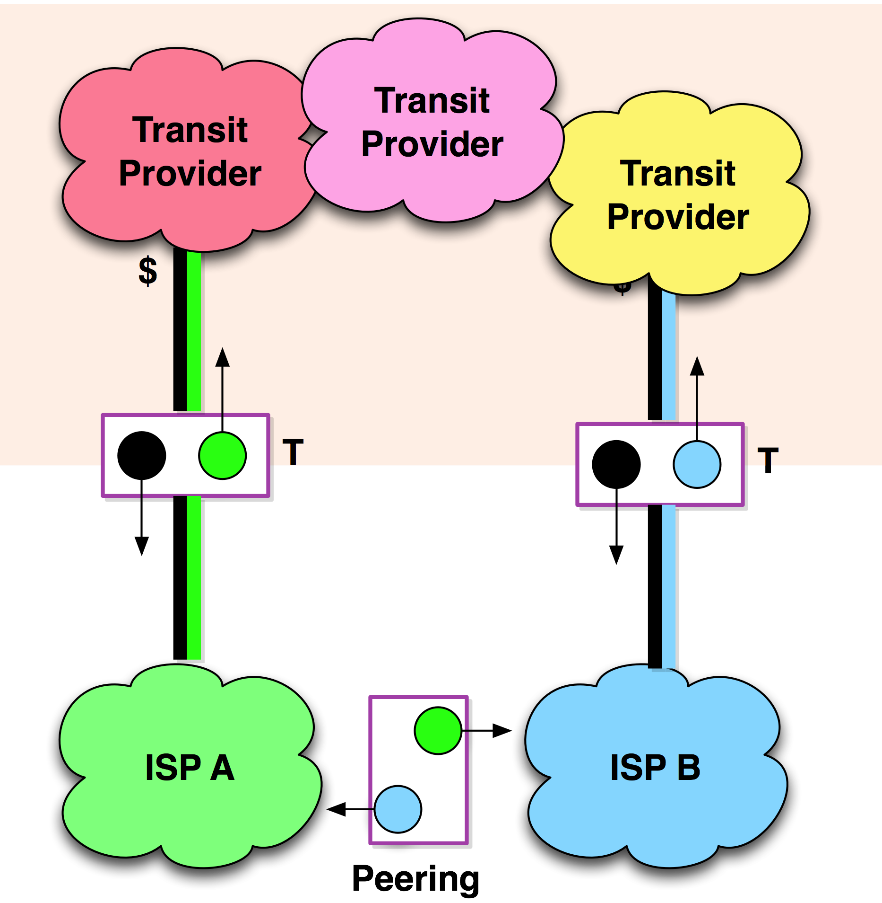

The Top 5 Motivations to Peer
Discussions with the peering coordinators highlighted several dominant motivations for Internet Peering:
1) Transit costs are reduced.
Internet Transit is often a large component of the cost of operating an Internet service. Peering provides a more direct traffic path between the parties while simultaneously reducing the load on these expensive transit services (as shown in Figure 4-4). If the cost of exchanging traffic in peering relationships is less than the cost of sending that traffic through a transit service, then peering can be proven to be a financially rational decision.
We will work through a detailed mathematical calculation of this reduction of transit costs in “The Business Case for Peering” chapter.

Figure 4-4. Internet Peering bypasses metered Internet Transit.
2) End-user experience is better.
By interconnecting directly with peers, the ISP’s customers experience lower latency to the other entity’s customers. Transit usually provides a more circuitous path than peering – a path through potentially many networks. (It is not uncommon to find more than 30 router hops from eyeballs to content.)
Notes from the field.
Without Peering, Packets Travel the Ocean. Twice!
In the late 1990s, traffic between the United Arab Emirates and Saudi Arabia traversed two international ISPs and across an overloaded exchange point in Washington, D.C. By peering this traffic in the Middle East instead, these ISPs reduced their transit costs and improved the performance for both customer bases.
3) Control over routing is strategic.
The performance of applications like gaming and video require special attention because of the adverse affect poor performance has on the application. For example, the Hollywood studios that I spoke with said that the “suspension of disbelief” is destroyed with just one or two “artifacts” such as pixilation, audio garbling, or freeze frames. For some of these companies, monitoring and managing the network traffic is too important to casually select the cheapest way to deliver video to the Internet.
Notes from the field.
End-User Experience Key Driver for Content Provider Peering
It is interesting to note that the content providers that started peering all said that the end-user experience was the primary driver for peering, and that control over routing was the means to accomplish a good end-user experience.
Yahoo! for example said that when it sees packet loss on a flow it adjusts its routing to route around the troubled path. The company could not do this if it simply allowed its upstream ISP to handle its traffic. For Yahoo! and most other content providers that are peering, the end-user experience – and therefore control over their traffic – is strategic.
4) Traffic billing is usage-based.
Most ISPs charge customers based upon how much traffic they send or receive. Since packet loss and latency severely restrict traffic consumption, these ISPs strive for the lowest-latency, lowest-packet-loss Internet Transit service for their customers. It is in their best interest to ensure that customers use as much bandwidth as possible. Minimizing loss and latency through effective traffic engineering helps them make more money.
Notes from the field.
ISPs Make More Money by Peering
Dave Rand first highlighted this effect, and conversations with European ISPs showed increasing adoption of the usage-based billing model.
5) ISPs enjoy marketing benefits.
ISPs market their extensive peering capabilities in their marketing literature. They market their well-peered backbone, their shorter paths, lower latency, etc. Wouldn’t you buy from an ISP that cares enough about performance to peer its traffic on a large scale?
Notes from the field.
Hurricane Electric Markets Broad Peering
A large-scale ISP and hosting company called Hurricane Electric highlights all of the interconnect points across the globe in its marketing literature. The marketing message is that the company takes responsibility for traffic all the way to the access networks, and that it leverages peering to provide better performance for customers.
Now let’s talk about the process of peering.